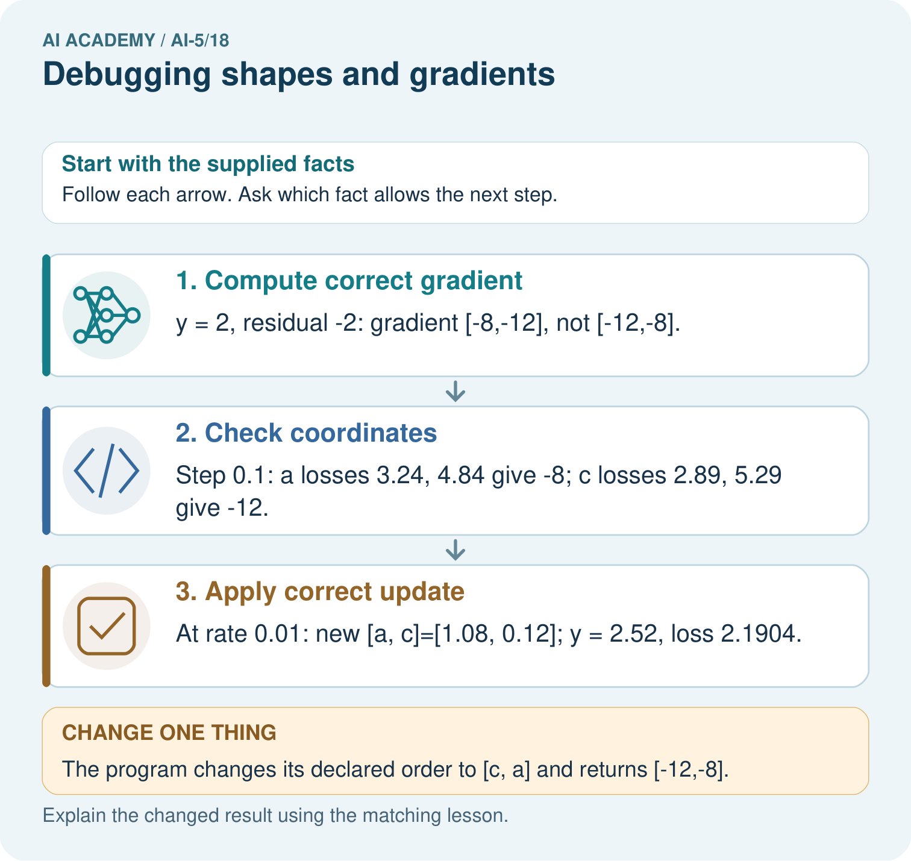

AI Academy · Level 5 · Grade 10 · Week 18 · Student lesson
Debugging shapes and gradients
Learn to understand, design, build, test and explain AI systems responsibly.
Project: Image-pattern Network Investigation
Before you start
Why does running the same code twice and getting the same answer not establish correctness?
Plan time to read, investigate and explain. Keep predictions separate from observations.
Student lesson · 1 of 16
Your mission
Your learning target
I can check dimension contracts before computing a layer.
I can locate the first wrong value in a forward or gradient trace.
I can verify a repair with independent checks and limited claims.
Remember before reading
Close your notes first. A rough first answer helps us choose the right starting point; it is not a score for your ability.
Without opening the old lesson, explain one key idea from Initialisation and reproducibility. Give an example and a mistake that the idea helps you avoid.
Without opening the old lesson, explain one key idea from Training and validation curves. Give an example and a mistake that the idea helps you avoid.
Without opening the old lesson, explain one key idea from Training a small network. Give an example and a mistake that the idea helps you avoid.
After trying, check the relevant lesson or ask your teacher. Change the part of your explanation that the evidence shows was wrong.
This week you will practise:
Check dimension contracts before computing a layer
Locate the first wrong value in a forward or gradient trace
Verify a repair with independent checks and limited claims
Retrieve what you already know
Why does running the same code twice and getting the same answer not establish correctness?
This week’s end goal
By the end, I can explain debugging shapes and gradients using a traced example and a stated limitation.
Student lesson · 2 of 16
Notice the evidence
For this lesson, a dense layer stores one output unit per weight-matrix row. If an input has two features and the layer has three units, W has three rows and two columns, b has length 3, and one input x has length 2. Compute z for each unit, then apply ReLU to each component.
Use W rows [1, 0], [0, 1], [1, -1] and b = [0, 0, 1]. For x = [1, 2], the scores are [1, 2, 0] and the activations are [1, 2, 0]. A batch stores examples in rows: inputs [[1, 2], [3, 1]] have shape 2 by 2, and outputs have shape 2 by 3.
| Object | Declared shape | Meaning |
|---|---|---|
| One input x | Length 2 | Two features |
| Weights W | 3 by 2 | Three units each reading two features |
| Bias b | Length 3 | One bias per unit |
| Batch output | 2 by 3 | Two examples each with three activations |
Other software may use a transposed weight convention. The key is to record and follow one contract. An array with the right number of values can still be wrong if features or axes are swapped.
Student lesson · 3 of 16
See how it works
Python zip stops when its shortest input ends. Without a length check, a missing feature can silently remove a contribution. Reject malformed dimensions before computing: do not pad, truncate or reshape a mismatched input just to make the calculation run.
def dense_relu(x, weights, bias):
if not x or not weights:
raise ValueError("Need input features and units")
if len(bias) != len(weights):
raise ValueError("One bias per unit required")
if any(len(row) != len(x) for row in weights):
raise ValueError("Each unit needs one weight per feature")
scores = [sum(w * value for w, value in zip(row, x)) + b
for row, b in zip(weights, bias)]
return scores, [max(0.0, z) for z in scores]
weights = [[1, 0], [0, 1], [1, -1]]
bias = [0, 0, 1]
for x in [[1, 2], [3, 1]]:
print(dense_relu(x, weights, bias))
# ([1, 2, 0], [1, 2, 0])
# ([3, 1, 3], [3, 1, 3])The function assumes finite numeric values; it checks dimensions, not every possible input fault. Evaluate the two batch rows independently and stack their outputs. Retain tests that reject a missing input feature, a short weight row and an incorrect bias count.
Connect the picture and the explanation
Point to the input, the deciding step and the result in this week’s visual. Explain the same step in ordinary words. A picture helps when you can say what each part represents.
Student lesson · 4 of 16
Compare the cases
Compare a familiar case with a changed case
Compute scores and activations for x = [3, 1] with the lesson layer, then omit the third bias. Identify the first discrepancy and the resulting activation error.
Change one thing in the pictured case
Change: The program changes its declared order to [c, a] and returns [-12,-8].
Prediction: That vector now matches the declared coordinate order.
Reason: Gradient values are meaningful only when their parameter names and array positions agree.
Student lesson · 5 of 16
Words that unlock the idea
| Word | Meaning |
|---|---|
| Shape | The sizes of an array along its declared axes |
| Contract | A stated condition that inputs and outputs must satisfy |
| Partial gradient | The change rate of a scalar loss with respect to one parameter while others are fixed |
| Regression check | A saved check rerun after a repair to detect the return of a defect |
Student lesson · 6 of 16
Follow a worked example
Repair from the first disagreement
Learn from the worked case
Cover the result before checking it. Say what is given, choose the procedure, and follow one step at a time. Then uncover the result and explain your first mismatch. Ask why a step is allowed, not only what number it produces.
A pictorial worked case: Debugging shapes and gradients
Catch a gradient -order bug before the optimiser changes parameters.
The facts we will use
Toy y=2a+3c, target 4, start [a, c]=[1, 0]. Loss (y-4)². Program claims gradient [-12,-8] in order [a, c].
All inputs and outcomes in this worked example are invented classroom data; no real model run is claimed.

Read the picture one step at a time
Why this result follows
Array shape and coordinate meaning both matter. A vector with two entries can have the right length but assign each derivative to the wrong parameter. Label the entries a and c, then perturb one coordinate at a time to check their slopes. Repairing the coordinate mapping is necessary before using the gradient to update the network.
What this example does not establish
A correct gradient at one point does not establish every batch, shape or activation path is implemented correctly.
Read the labelled picture: What should a debugging record pair with every gradient value? Point to the relevant step in the picture, then write the changed result and the rule or evidence that supports it.
Change one thing: The program changes its declared order to [c, a] and returns [-12,-8]. Predict the result before checking the explanation. What remains the same?
Student lesson · 7 of 16
Find and repair a mistake
Use a separate scalar diagnostic model y = 2w + b, target 3, loss (y - 3) squared, and parameter order [w, b]. At [1, 0], prediction is 2, residual -1 and gradient [-4, -2]. A submitted gradient [-2, -4] has the correct length but swapped meanings.
With symmetric step 0.1, probe w while b stays 0: losses at w = 0.9 and 1.1 are 1.44 and 0.64. Their difference divided by 0.2 is -4. Probe b while w stays 1: losses at b = -0.1 and 0.1 are 1.21 and 0.81, giving -2. Use original parameters for both probes and compare by coordinate with a stated tolerance.
A gradient check must include the actual loss convention and any penalty. For ReLU, avoid probes crossing its corner at zero; a symmetric value there need not be a derivative. A passing numerical check at selected points is evidence about those points, not a proof for every input.
Locate the earliest unsupported step
For the diagnostic model at [1, 0], gradient [-4, -2] and rate 0.05, calculate the correct new parameters and loss. Compare with adding the gradient step.
Student lesson · 8 of 16
Practise together
The layer expects W shape 3 by 2, b length 3 and x length 2. A submitted x has length 3. Should the last feature be silently ignored? State the failed contract and repair process.
Practise with less help: Expose a hidden bias error
Use workbook W2 for the connected example “Debugging shapes and gradients”. First fill the input and rule boxes. Try the middle steps before asking for a hint. After a hint, try the next step yourself.
| Plan | Do | Check |
|---|---|---|
| What is given? Which rule or procedure applies? | Record each intermediate step. | Does the result follow? What remains unknown? |
Explain your trace to a partner. Your partner points to one step to check. Swap roles on the next case. Each person writes their own explanation.
Check your reasoning
Use the worked case for Debugging shapes and gradients. Proposed explanation: “Matching output shape guarantees the computation”. Decide whether this explanation is supported. Point to the step or supplied fact that decides; explain your repair if needed.
Answer on your own before discussion. If you are unsure, say which step you need help with.
Explain the picture
What should a debugging record pair with every gradient value? Point to the relevant step in the picture, then write the changed result and the rule or evidence that supports it.
This is supported practice. Keep the separately named independent case for an attempt before feedback.
Student lesson · 9 of 16
Run the investigation
Predict, investigate and preserve the evidence
Compute scores and activations for x = [3, 1] with the lesson layer, then omit the third bias. Identify the first discrepancy and the resulting activation error.
def dense_relu(x, weights, bias):
if not x or not weights:
raise ValueError("Need input features and units")
if len(bias) != len(weights):
raise ValueError("One bias per unit required")
if any(len(row) != len(x) for row in weights):
raise ValueError("Each unit needs one weight per feature")
scores = [sum(w * value for w, value in zip(row, x)) + b
for row, b in zip(weights, bias)]
return scores, [max(0.0, z) for z in scores]
weights = [[1, 0], [0, 1], [1, -1]]
bias = [0, 0, 1]
for x in [[1, 2], [3, 1]]:
print(dense_relu(x, weights, bias))
# ([1, 2, 0], [1, 2, 0])
# ([3, 1, 3], [3, 1, 3])| Record | Your evidence |
|---|---|
| Given input and fixed rule | |
| Prediction before checking | |
| Actual result, or “not run” | |
| First mismatch and one explanation | |
| Boundary or missing input and expected response |
On paper, trace the supplied procedure. If code is provided, predict before running it in a local practice file. Never write an expected answer as though it were an observed run.
Plan → try → check
Before trying: what do I expect, and why? While trying: which step could first go wrong? Afterwards: what did I actually observe, and what should change? Keep “not run” if you only traced the procedure.
Student lesson · 10 of 16
Build your understanding
Explain → apply → challenge
The layer expects W shape 3 by 2, b length 3 and x length 2. A submitted x has length 3. Should the last feature be silently ignored? State the failed contract and repair process.
For the diagnostic model at [1, 0], gradient [-4, -2] and rate 0.05, calculate the correct new parameters and loss. Compare with adding the gradient step.
A program passes only the x = [1, 2] final-activation test. Propose one intermediate-value check, one malformed-input check and one additional input that exposes the bias omission.
Student lesson · 11 of 16
Connect your project
Add a labelled debugging shapes and gradients evidence sheet to Image-pattern Network Investigation. Show how you can check dimension contracts before computing a layer. Use the supplied fictional case and keep its inputs, intermediate steps, calculation or prediction, and limitation. Connect this record to last week’s record; a matching answer without a trace is insufficient.
| Project evidence | Record |
|---|---|
| Component and version | |
| Inputs permitted at prediction time | |
| Trace and comparison with earlier work | |
| Failure, limit and human review |
Evidence for your project
For your Image-pattern Network Investigation, save the input, procedure, observed result and limitation of this check. Label this worked example as practice; use a different, previously unreviewed case when checking independent understanding.
Student lesson · 12 of 16
Show what you know
At [w, b] = [1, 0], use the verified gradient [-4, -2] and rate 0.05. Subtracting rate times gradient gives [1.2, 0.1], prediction 2.5 and loss 0.25. A sign bug that adds it gives [0.8, -0.1], prediction 1.5 and loss 2.25. Recompute loss after the complete update instead of trusting an intended direction.
Lower loss alone cannot prove a correct gradient or update; some wrong steps also improve loss. Retain shape rejections, hand-computed intermediate traces, numerical coordinate checks and update checks. Next week investigates the representations produced by hidden layers.
A program passes only the x = [1, 2] final-activation test. Propose one intermediate-value check, one malformed-input check and one additional input that exposes the bias omission.
Student lesson · 13 of 16
Study a complete case
Complete evidence record
Repair from the first disagreement
Follow the input through the stated procedure to its result. Cover the result first, predict it, then explain every intermediate step. The text/table accompanies the figure so the example can be read without colour.
Student lesson · 14 of 16
Try a new case independently
Independent case: Debug a new gradient independently
Use y = 3a + c, target 2, loss (y - 2) squared, at [a, c] = [0, 1]. A program returns gradient [-2, -6] in order [a, c]. Use symmetric step 0.1 to check each coordinate, then update both with the corrected gradient and rate 0.05. Report new parameters and loss.
Attempt this case before feedback. Record any help. Earlier examples below are further practice; a case already practised with feedback cannot establish fresh transfer.
Attempt this without hints
Use y = 3a + c, target 2, loss (y - 2) squared, at [a, c] = [0, 1]. A program returns gradient [-2, -6] in order [a, c]. Use symmetric step 0.1 to check each coordinate, then update both with the corrected gradient and rate 0.05. Report new parameters and loss.
Record support used: none, hint or teacher explanation. After feedback, a different case is needed to demonstrate independence.
Use feedback to improve
Attempt the independent case before hints. Record whether you worked alone, used a hint or followed a model. After feedback, fix the first unsupported step and explain why it changed. A later check uses a changed case, not a copied answer.
Student lesson · 15 of 16
Your lesson route
Start with this question: Catch a gradient -order bug before the optimiser changes parameters.
| By the end, I can | How I will show it |
|---|---|
| Check dimension contracts before computing a layer | Explain the deciding step, show a trace or test, and state one limit. |
| Locate the first wrong value in a forward or gradient trace | Explain the deciding step, show a trace or test, and state one limit. |
| Verify a repair with independent checks and limited claims | Explain the deciding step, show a trace or test, and state one limit. |
Remember → watch and explain → try with help → investigate → try independently → keep project evidence. Your teacher may spread this lesson across several classes.
Keep your first prediction. Compare it with what the evidence shows and explain any change.
Student lesson · 16 of 16
Finish and return
Close your notes. Explain this goal in your own words: Check dimension contracts before computing a layer
If you are unsure, return to the worked picture and explain one arrow. If you are ready, change an input or assumption and justify your prediction.
Save your workbook evidence. At the next review, try a different case before opening your old answer.